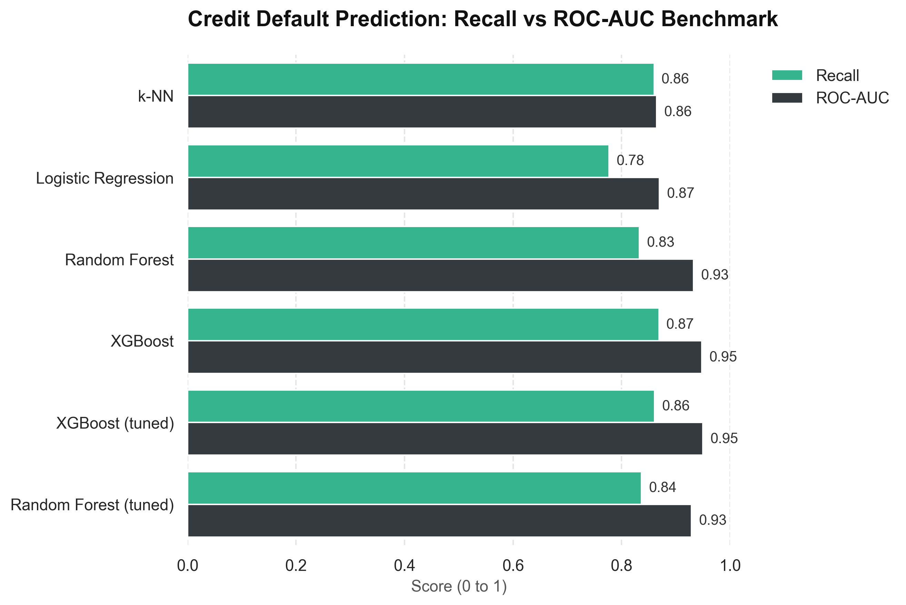
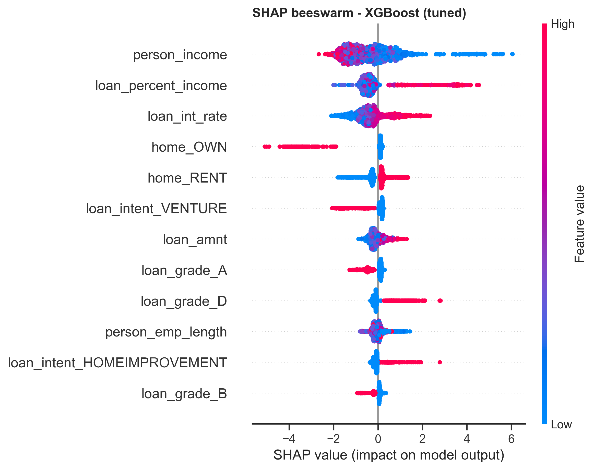

Predicting Credit Default
A leakage-free machine-learning pipeline that estimates every applicant's probability of default and turns it into approve / review / reject decisions — catching 86% of defaulters and cutting simulated losses by 81%.
A lender loses money in two ways: approving a client who later defaults, and rejecting a good client who would have paid. In this portfolio (32,581 loans from the public Kaggle Credit Risk dataset, 32,409 after cleaning) about 22% of loans defaulted. The goal was to estimate each applicant's probability of default so a credit team can approve, review or reject based on risk — and to measure what that is actually worth in money, not just in accuracy points.
From a k-NN baseline to a calibrated risk engine
The project has two versions. The original compared k-NN and SVM and reached 61% recall. Version 2 rebuilds the work from the ground up and is the one summarised below; the original is kept in the repository unchanged.
Cleaning & framing the problem
Removed impossible records (ages above 100, employment histories longer than a working life) and framed the goal around recall on defaulters rather than accuracy: a model that approves everyone is still roughly 78% accurate while the bank loses money on the other 22%.
Leakage-free pipelines
In the original version, imputation and encoding ran on the full dataset before the train/test split. In v2 every preprocessing step — imputation, scaling, encoding — sits inside a pipeline and is fitted on training data only, so the test results are an honest estimate of performance on new applicants.
Model comparison with cross-validation
Compared k-NN, Logistic Regression, Random Forest and XGBoost using stratified 5-fold cross-validation, then tuned the two strongest tree models. Results are reported on a 30% hold-out test set that was never used for tuning.
Choosing the decision threshold
A 0.5 cutoff is rarely right for a lender. The threshold was chosen on out-of-fold training predictions, favouring recall (F2), and the final numbers carry 95% bootstrap confidence intervals so the uncertainty is visible.
Probability calibration
The raw model overstated risk — a mean predicted default probability of 29.2% against 21.9% observed. Isotonic calibration brought it to 22.1% and cut the Brier score from 0.064 to 0.052 without hurting ranking quality.
Explainability & stress tests
SHAP values show what drives each decision. Ablation tests removed the lender's own pricing signals (loan grade and interest rate) and the applicant's age to check that the model is not simply echoing an earlier score or leaning on a sensitive variable.
Translating the model into money
Scored all 32,409 clients, split them into Low / Medium / High risk bands, and ran a cost analysis (illustrative 60% loss given default plus one year of forgone interest) comparing the model against approving everyone and against a simple "reject grades D to G" rule.
Tree models win because risk lives in combinations
| Model | ROC-AUC | PR-AUC |
|---|---|---|
| k-NN | 0.865 | 0.735 |
| Logistic Regression | 0.870 | 0.708 |
| Random Forest | 0.933 | 0.886 |
| Random Forest (tuned) | 0.929 | 0.878 |
| XGBoost (tuned) | 0.950 | 0.907 |
Hold-out test set (30% of loans). Linear and distance-based models plateau because default risk depends on combinations of variables — for example loan grade together with loan-to-income — which trees capture naturally.

What the model and the data showed
- 86% of defaulters caught. The tuned XGBoost recalls 86.1% of defaulters (95% CI 84.7% to 87.6%) at 66.8% precision. For comparison, the original k-NN caught 61.1% at the default 0.5 cutoff.
- 81% lower simulated loss. Using the model as a credit filter cuts the simulated loss from USD 13.97M to USD 2.67M versus approving every loan (95% CI 79.1% to 82.6%). The naive "reject grades D to G" rule saves 37.3%. Across a range of cost assumptions the saving stays between 75.5% and 84.3%.
- Risk bands separate clients cleanly. Observed default rates are 2.1% for Low risk (17,364 clients), 11.4% for Medium (7,302) and 76.1% for High (7,743). The High band holds about 82% of the expected loss.
- Loan size relative to income is the sharpest signal. Loans above 30% of income default 70.4% of the time, against 11.6% below 10%. A prior default on file lifts the rate from 18.4% to 37.9%.
- The model is more than the lender's own score. Without loan grade and interest rate, ROC-AUC falls from 0.950 to 0.904 — part of the signal is earlier pricing, but a substantial independent signal remains. Removing age costs almost nothing (0.948).

Explore the Power BI dashboard
Interactive three-page report built on the v2 model scores: portfolio overview, where the risk is concentrated, and model performance with a decision table by risk band. Use the filters and the page tabs to explore.
Having trouble viewing it? Open the dashboard directly. Original v1 write-up: Predicting Credit Default.
The result is a path from a single yes/no score to a risk-based lending policy: approve the Low band, review the Medium band, and focus scarce attention on the High band where most of the expected loss sits. The fix is not to stop lending — it is to price and screen risk with evidence.
Caveats: cost figures are illustrative US-dollar assumptions (the notebook includes a sensitivity analysis); the data is a snapshot with no time dimension and outcomes only for approved loans; and variables such as age may be restricted in real credit decisions, so a compliance review would be required before any real use.